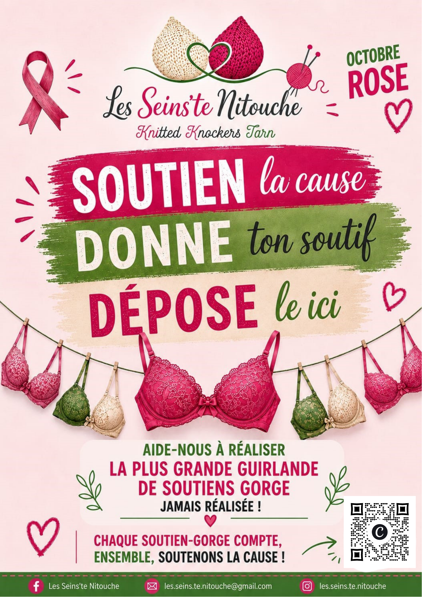

84 lieux géolocalisés : l’association et 83 points de collecte.
Près de chez vous
Consultez nos points de collecte répartis en France et retrouvez facilement le lieu le plus proche de chez vous.

84 lieux géolocalisés : l’association et 83 points de collecte.